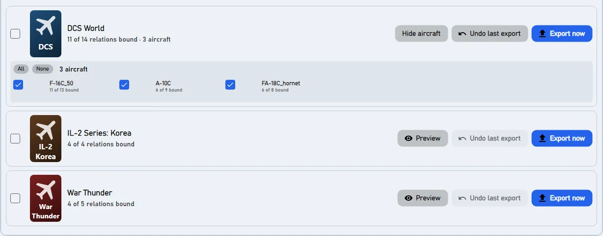
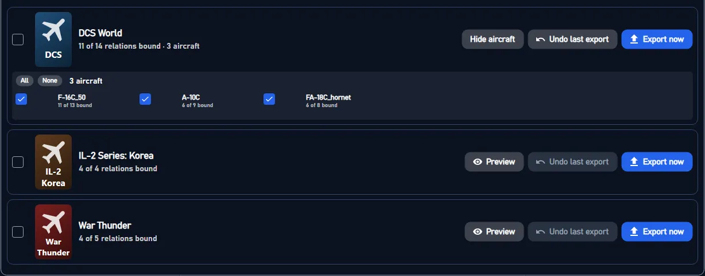

DCS keeps its controls per aircraft and per device: every module has its own binds on your stick, and DCS adds its own default binds to every device. JoyPro reads these files into one profile, lets you build relations that cover all your aircraft at once ("Gear" in the F-16C, the F/A-18C and the A-10C II) and writes them back into each aircraft's files. Nothing runs while you fly: DCS reads its own files as always.
Coming later: one YouTube video per topic, recorded with the English interface, with subtitles in every language JoyPro speaks.
DCS World native (its own bind files)
- Support
- native (its own bind files)
- Engine command
engine dcs- Bind file
Saved Games\DCS\Config\Input\<aircraft>\joystick\<device>.diff.lua(Lua diff), keyboard and modifiers.lua;.jpsidecar- Inputs the game reads
- reads 128 buttons, 8 axes, 4 hats per joystick (documented)
- Command list from
- the install's input Lua files, run by DCS's own
luae.exe(DCS stays closed) - In-game test
- 56/56 steps passed (2026-10-11)
- ✓ Import
- ✓ Export
- ✓ Keyboard binds
- ✓ Modifiers
- ✓ Command list built on your PC
- ✓ Game watcher
- ✓ Axis curves and dead zones
- ✗ Game control settingsDCS keeps its force feedback settings per device and aircraft (FF Tune), see In-game FFB; there are no game-wide control settings to manage.
- ✓ In-game force feedback settings
- ✓ Force feedback from telemetry
- ✓ Telemetry recording
- ✓ Virtual joystick (vJoy)
- ◐ Virtual Xbox pad
- ✓ Virtual functions
- ✓ Setup wizard / Auto Assign
- ✓ Cockpits
- ✓ Cheat sheets
- ✓ In-game test
From the support matrix, generated from the engine's code: all games.
flowchart LR
P["Your profile<br/>(relations + binds)"] --> E["engine dcs export<br/>(ticked aircraft)"]
C[("Clean profiles<br/>DCS defaults per aircraft<br/>and device type")] --> E
E --> D["<aircraft> / joystick / <device>.diff.lua<br/>only the differences<br/>from DCS's defaults"]
E --> J[".jp beside it<br/>(names, groups)"]
E --> M["<aircraft>\modifiers.lua"]
D --> G["DCS: Options > Controls<br/>(per aircraft)"]
#What JoyPro does for DCS
- Import: every aircraft's binds on your sticks, throttles and pedals come into your profile, with your modifiers and axis settings. By default the DCS default binds that are active on your devices come in too, so nothing gets lost when you export again.
- Relations: one relation is one function in every aircraft. "Weapon release" can be the pickle button in the F-16C and in the A-10C II, with one button on your stick.
- Export: JoyPro writes each ticked aircraft's files. DCS then shows your binds in Options > Controls.
#Import your DCS binds
- Open Start. The DCS card shows the game's picture. If the card asks for a command list, press Build List first: JoyPro reads every installed module with DCS's own Lua (DCS stays closed; a few seconds to a minute).
- Press Import on the DCS card. Keep All my DCS aircraft ticked, or untick it and pick the aircraft you fly.
- Press Import now. See my relations opens what came in.


#Build and check relations
On the Relations page a relation lists its action per aircraft. Use the aircraft filter to see one module, and the relations flow to join actions of several aircraft into one relation. Then Check on the Export page: it finds one button that does two things in the same aircraft before DCS does.
#Export to DCS
- Close DCS. JoyPro refuses to write while DCS runs, because DCS writes its files when it quits.
- Open Export. On the DCS tile, Aircraft... lists every aircraft of your profile: only ticked aircraft are written, the others keep their files exactly as they are.
- Keep the first choice, Replace on my devices with Also clear my other devices, if JoyPro is where you set up your sticks. Press Export now on the DCS tile.




Start DCS and open Options > Controls, then pick the aircraft at the top. Your binds are in your device's column under DCS's own command names; DCS defaults that JoyPro removed show as empty cells; your modifiers are in DCS's modifier list. Axis curves show in Axis Tune of the axis. Other aircraft you did not tick look as before.
A screenshot from the game itself, taken during JoyPro's in-game test runs, comes here later.
#What you do yourself in DCS
- Nothing else is needed for the binds. If you use another Saved Games folder (for example
Saved Games\DCS.openbeta), set it once in Settings > Games under Controls saved in. - For the HUD's aircraft and for force feedback from telemetry, JoyPro installs a small script into DCS once (see Advanced); close DCS for that too.
#Common pitfalls
- "DCS is running": close DCS (also the launcher's background process) and export again.
- An aircraft kept its old binds: it was not ticked under Aircraft... on the DCS tile, or the profile has no relation for it.
- A stick has binds you never made: these are DCS's default binds on a device JoyPro did not write. Tick Also clear my other devices, or see Default binds below.
- Two identical devices: DCS tells them apart by their instance ID; keep Treat devices with the same name as one device on, so a device that Windows gave a new ID is read as the same device.
- A command DCS shows is "not in its list": a mod added it (for example the Input Command Injector with a community keybinds pack). When the Start page says Your DCS mods changed the controls list; rebuild the command list, press Refresh DB on it once: JoyPro reads the mod's commands the way DCS does. Commands JoyPro finds in your DCS bind files before that are known already and marked from your DCS files.
#Files JoyPro reads and writes
| File | What it is |
|---|---|
%USERPROFILE%\Saved Games\DCS\Config\Input\<aircraft>\joystick\<device>.diff.lua |
your binds on one device in one aircraft, as differences from DCS's defaults (keyDiffs, axisDiffs with added / removed, ffDiffs) |
...\<aircraft>\joystick\<device>.jp |
JoyPro's copy with relation names and groups, read back by the next import |
...\<aircraft>\keyboard\Keyboard.diff.lua |
the keyboard (only when you export keyboard binds) |
...\<aircraft>\modifiers.lua |
the aircraft's modifiers |
<aircraft> is the input profile name the module declares (for example F-16C_50, FA-18C_hornet). Another Saved
Games folder (DCS.openbeta) is set in Settings > Games. The files are written without a byte order mark, because
DCS's Lua cannot load one.
#Commands from mods
Some mods add commands to DCS's controls list:
- Input Command Injector (by Quaggles, often with a community keybinds pack): the extra commands live in
Saved Games\DCS\InputCommands\<module>\Input\<profile>\joystick\default.lua(andkeyboard), and the injector in the DCS installation (Scripts\Hooks) joins them to the module's own list when DCS loads the controls. - Modules in
Saved Games\DCS\Mods\aircraft: they bring their own command lists.
JoyPro's command list (Build List / Refresh DB) reads them the way DCS does: from the Saved Games folder your
DCS installation really uses (DCS.openbeta for an OpenBeta installation), with the injector's commands joined when
the injector is installed, with the same command ids DCS gives them. When your mods change, the Start page says
Your DCS mods changed the controls list; rebuild the command list; one Refresh DB brings the new commands.
A command that is in your DCS bind files but not yet in the command list (for example a mod you added after the list was built) is known anyway: JoyPro takes its exact id and name from the file and marks it from your DCS files on the Relations page, and the Start page suggests a rebuild.
| File | What it is |
|---|---|
Saved Games\DCS\InputCommands\... |
the Input Command Injector's extra commands (read only) |
<data>\GameData\DcsCommandsFromYourFiles.tsv |
commands found in your DCS bind files that the command list lacks |
#The export modes in DCS
Every mode works on the binds a device file has active in DCS: the device's defaults, minus what the file removes, plus what it adds. JoyPro then writes only real differences from the defaults, as DCS itself would.
| Mode | What happens in the exported aircraft |
|---|---|
| Only add | Nothing is removed. A bind whose button DCS already uses for another command (also a DCS default) is not written and gets a mark "Not written to the game". |
| Update, keep the game's binds | Your binds go in; DCS's defaults and your in-game binds stay, except a bind of another command on a button you use. |
| Update, my profile wins | As above, and every command you bind loses its other buttons in that aircraft (on every device file and on connected devices without a file; DCS defaults count). |
| Replace on my devices | The devices you write get exactly your binds in the exported aircraft, DCS defaults removed. |
| + Also clear my other devices | Connected devices without a bind in the aircraft lose all binds there, DCS defaults included. |
Options on the Export page (under Options and paths (for experts)):
- Keep keyboard defaults (on): no keyboard file is written. Off: your keyboard binds are written, and only the DCS default keys they take are removed; every other default key stays.
- My devices lose the DCS default binds in every other aircraft too (off): with Replace, the written devices are also emptied in every installed aircraft you did not export. The input layers (UI layer, camera, general) are never touched.


#What is never touched
- Devices that are not connected keep their files byte for byte.
- The import's ignored devices and the vJoy device JoyPro tunnels into are never cleared.
- The keyboard is never cleared or taken over, in any mode; mouse binds are never written.
- Aircraft you did not tick, and the input layers (UI layer, camera, the general layer) keep their files.
- Force feedback settings (
ffDiffs) of a device file that is emptied stay.
#Default binds
DCS gives each device type its own defaults per aircraft (a Warthog stick gets other defaults than a generic stick). JoyPro knows them from clean profiles it builds from your DCS with the command list: one per aircraft and device type. Replace and Also clear remove exactly these defaults from the devices they write.
For devices JoyPro does not write, Settings > DCS: default binds offers two changes to the DCS installation
itself, both off unless you switch them on: strip the defaults from every joystick file (each original kept as
<file>.nocombo.bak), or move DCS's device-specific default files into JoyPro's backup folder. Patched files fail the
integrity check of servers that enforce it; Restore DCS files puts every original back. After a DCS update JoyPro
applies a switched-on option again at its start.
flowchart TD
F["Device file of one aircraft"] --> A["Active in DCS =<br/>defaults (clean profile)<br/>- removed + added"]
A --> M{"Export mode"}
M --> S["Binds that shall be active"]
S --> W["Write only the difference:<br/>added = not a default<br/>removed = a default you do not want<br/>changed = a default with other tuning"]
W --> X["A bind equal to a default<br/>is not written<br/>(listed in the .jp only)"]
#Aircraft, curves, force feedback
- Per aircraft: every relation keeps its action per aircraft; the export writes the ticked aircraft only.
- Axis curves: dead zone, saturation X and Y, curvature or an 11-point user curve, invert and slider, written per aircraft as DCS's own filter (what Axis Tune shows). A curve can be set for all games, for DCS or for one aircraft (Binds > Axis response).
- In-game force feedback: Settings > DCS force feedback sets swap axis, invert X and invert Y per device
(
engine dcs ffb set). Telemetry force feedback: the Force Feedback page installs JoyPro's hookSaved Games\DCS\Scripts\Hooks\JoyProFfb.lua(DCS must be closed; other scripts such as SRS or Tacview keep working). - HUD: the HUD shows the binds of the aircraft you fly when the DCS hook is installed (HUD page > Install DCS
hook: a small Lua file plus one guarded line in
Export.lua, backed up first), or pick the aircraft by hand. - Watcher: a bind you change in DCS's Options > Controls is noticed after DCS closes; JoyPro asks whether to take it over. Only the aircraft whose files changed are compared, against the device's defaults plus its diff.
#Inside the DCS integration
Code: engine\EngineDcsImport.cs, engine\EngineDcsExport.cs, engine\EngineDcsExport.Modes.cs,
engine\EngineDcsRefresh.cs, engine\DcsDeviceNames.cs, engine\DcsCommandNames.cs, engine\EngineDcsDefaultsStrip.cs.
- Device names: DCS names a joystick
<DirectInput instance name> {<instance GUID>}, with the instance name exactly as DirectInput reports it, spaces at the ends included. JoyPro's own names trim those spaces;DcsDeviceNamesconverts both ways. The export names a file after the connected device's raw name, after an existing file for a device that is not connected, else after JoyPro's name. Files an older JoyPro wrote under the trimmed name are read when no DCS-named file exists and removed after the write (backed up). - Command list:
engine dcs refresh idruns every module's input Lua in DCS's ownbin\luae.exe(no game window), in several runs at once; English command names come from the install'sl10n\en\LC_MESSAGES\input.mo, whatever language DCS uses.engine dcs refresh cleanbuilds the clean profiles: DCS's ownInputData.clearProfilewith a fake stick per device type, into a temporary Saved Games folder (yourConfig\Inputis never changed). Files:%LOCALAPPDATA%\JoyPro2\GameData\CleanProfile\DCS\<aircraft>.cf,...\<aircraft>\<device type>.cf,KeyboardCleanProfile\DCS\<aircraft>.cf. - Import:
engine dcs import(--planes,--only-connected,--merge-same-name,--include-defaults,--include-keyboard, the--import-*tuning switches);engine dcs scanshows the same without changing the profile. - Export:
engine dcs export--mode clean|add|merge|merge-overwrite --nuke-untouched-devices true|false --keep-keyboard-defaults true|false --clean-all-aircraft true|false --planes <csv> --ignore-device <d>;--clear-keyboard-defaults true(command line only) also removes every other DCS default key of the written aircraft. Backups: every file to<file>.jpbakand into%LOCALAPPDATA%\JoyPro2\GameBackupsbefore the first write. - Checking:
engine dcs verify-cleanlets DCS's own Lua list every default bind still active on your joysticks (read only;--include-disconnectedwith fake sticks,--dump-activeto compare before and after an export). - Default binds in the install:
engine dcs strip-defaults(apply|restore|status|auto, marker line-- [[DCS_STRIP_JOYSTICK_DEFAULTS v1]], originals as.nocombo.bak, every patched file loaded by DCS's loader before it counts) andengine dcs device-luas(list|remove|restore; files move to<data>\DcsDefaults\DeviceLuaswith a manifest). Both refuse while DCS or its updater runs. - Force feedback:
engine dcs ffb list,engine dcs ffb set,engine dcs ffb clear. - HUD hook:
engine overlay dcs-hook status(install/remove): DCS sends the unit type to127.0.0.1:1992.
#Known limits
- Only installed modules get command lists and clean profiles.
- A device you ran DCS's axis wizard for keeps the wizard's assignment as its default (
wizard.lua, per device instance); JoyPro does not change it. - The input layers DCS shares between aircraft (General, UI layer, Combined Arms) are not written.
- Tests:
engine\tests\smoke\dcsexportmodes.ps1(every mode, round trip, undo byte for byte),smoke\dcskeyboard.ps1,smoke\dcsdefaults.ps1; in the gametools\e2e\games\DCS.ps1andDCSCurves.ps1.
All technical notes on this game (generated from the repository): dcs.md.